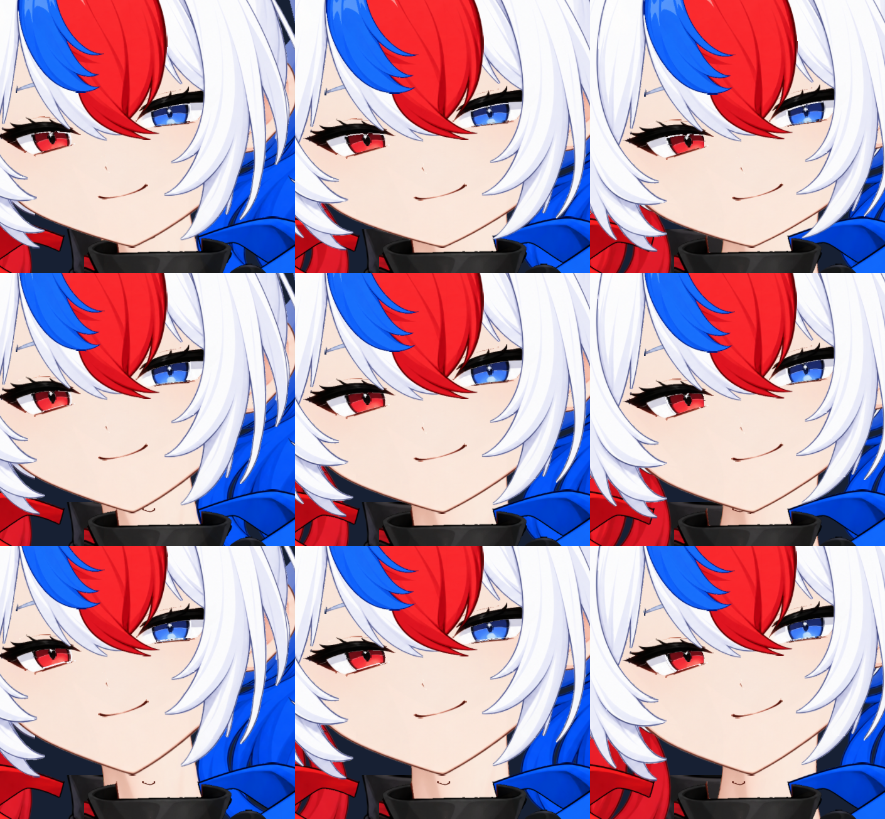
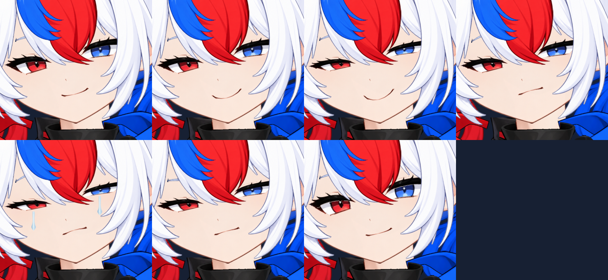

전신 파츠 재조합
원본 크기의 재조합 그림고개 9방향

표정

개별 PNG를 임의로 회전시키던 이전 미리보기는 이 모델의 연결 워프와 일치하지 않아 사용하지 않습니다. 파츠·메시 편집 파일은 umamo/hana.cmo3입니다.
구성과 남은 작업아래 영상은 MOC3를 실제 재생기로 렌더링한 무음 시험입니다. 마우스 추적과 표정 버튼은 프로젝트 루트의 check_hana_avatar.vbs에서 확인하십시오. 전체 정밀 재작화와 리깅의 최종 완성본은 아닙니다.


개별 PNG를 임의로 회전시키던 이전 미리보기는 이 모델의 연결 워프와 일치하지 않아 사용하지 않습니다. 파츠·메시 편집 파일은 umamo/hana.cmo3입니다.
구성과 남은 작업